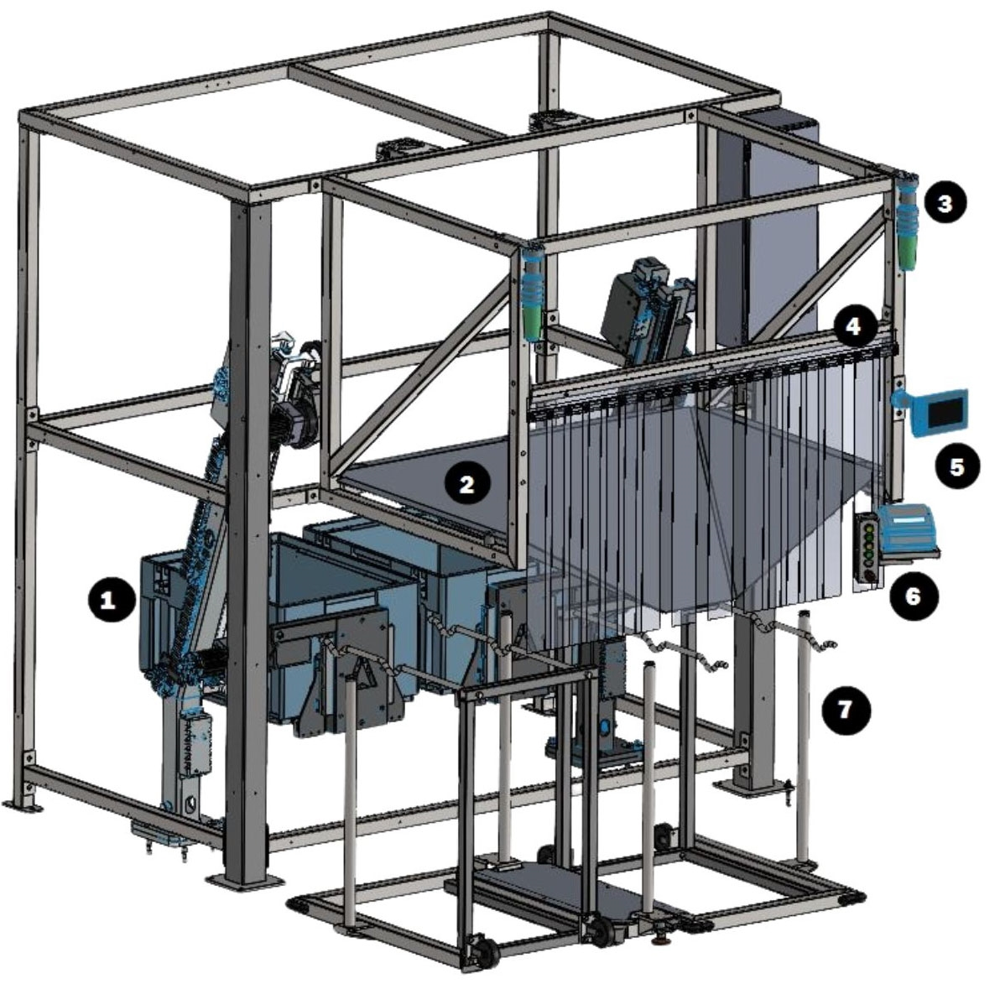

| Procedure ID | proc_perform_operator_station_daily_preventive_maintenance_checks_controller_stacklights_chute_debris_v1 |
|---|---|
| Title | Perform Operator Station Daily Preventive Maintenance Checks (Controller, Stacklights, Chute Debris) |
| Procedure Type | operation |
| Primary Role | operator |
| Support Safe | Yes |
| Capability Tags | device_roster_state |
| Access Surface | physical_floor |
| Audience Roles | operator |
| Failure Pattern Tags | None |
| Validation Status | needs_sme_review |
| Merge Status | source_finalized |
Perform a daily operator station inspection to verify the operator station is safe/ready for operation by checking for controller damage, confirming stacklights are operational, and ensuring the chute is free of debris such as stuck labels.
Use this procedure for daily preventive maintenance checks of the OptiSweep operator station to confirm it is safe/ready for operation (controller condition, stacklights operational, chute free of debris such as stuck labels).

Responsible role: operator
Instruction:
Go to the operator station and visually inspect the controller area for any damage.
Expected result:
The controller shows no visible damage.
Stop or Escalate If:
Responsible role: operator
Instruction:
Check the operator station stacklights and confirm they are operational (functioning/visible as intended).
Expected result:
Stacklights are operational.
Stop or Escalate If:
Responsible role: operator
Instruction:
Inspect the chute and remove/clear any debris such as stuck labels.
Expected result:
The chute is free of debris (e.g., no stuck labels).
Stop or Escalate If:
Responsible role: operator
Instruction:
If any controller damage is found, or stacklights are not operational, or debris is present in the chute, stop the daily inspection and escalate to maintenance/support as required by site practice.
Expected result:
Inspection is stopped and maintenance/support escalation is initiated when any of the three checks fail.
Stop or Escalate If: